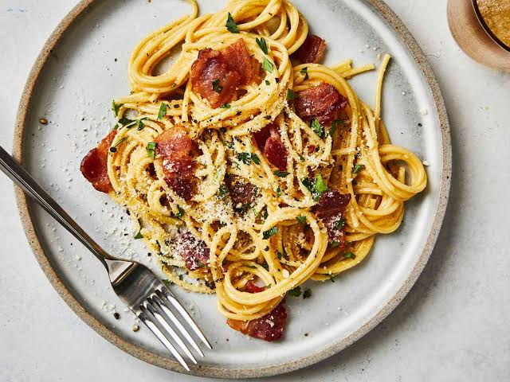

Home
Spaghetti Carbonara Recipe

Description
Spaghetti Carbonara is a quintessential Roman pasta dish celebrated for its rich, velvety texture and deep, savory flavors derived from just a few humble ingredients. Authentic Carbonara relies entirely on the emulsification of raw eggs, finely grated Pecorino Romano cheese, and starchy pasta cooking water to create its signature creamy sauce, completely omitting any heavy cream. This luxurious mixture coats perfectly al dente strands of spaghetti, which are tossed with crispy, golden cubes of guanciale (cured pork cheek) or pancetta. A generous amount of freshly cracked black pepper cuts through the richness, creating a beautifully balanced and comforting masterpiece.
The allure of Carbonara lies in its culinary precision and the technique required to master its delicate balance. Timing is critical, as the egg and cheese mixture must be tossed with the hot pasta away from direct heat to create a smooth sauce without accidentally scrambling the eggs. While Roman tradition strictly guards the use of guanciale and Pecorino Romano, modern variations worldwide sometimes substitute pancetta, Parmesan, or even thick-cut bacon depending on ingredient availability. This balance of simplicity and technique has elevated Carbonara from a rustic Italian comfort food to one of the most revered and sought-after pasta dishes on menus globally.
Ingredients
- 1 pound spaghetti
- 2 tablespoons olive oil, divided, or as needed
- 8 slices bacon, diced
- 1 onion, chopped
- 1 clove garlic, minced
- ¼ cup dry white wine
- 4 large eggs, beaten
- ½ cup grated Parmesan cheese
- salt and black pepper to taste
- 2 tablespoons chopped fresh parsley
- 2 tablespoons grated Parmesan cheese
Steps
- Bring a large pot of lightly salted water to a boil. Cook spaghetti in boiling water, stirring occasionally, until tender yet firm to the bite, about 12 minutes. Drain, toss spaghetti with 1 tablespoon olive oil, and set aside.
- Place diced bacon in a large skillet over medium heat; cook and stir until evenly browned, about 10 minutes. Drain bacon on paper towels, reserving 2 tablespoons bacon fat in the skillet.
- Add 1 tablespoon olive oil to bacon fat in the skillet. Add chopped onion and cook over medium heat until onion is translucent. Add minced garlic and cook until fragrant, about 1 minute. Add wine and cook 1 minute more.
- Return cooked bacon to the skillet; add cooked spaghetti. Toss to coat and heat through, adding more olive oil if it seems dry or sticks together. Add beaten eggs and cook, tossing constantly with tongs or a large fork, until eggs are barely set. Quickly add 1/2 cup Parmesan cheese and toss again. Season with salt and pepper (remember that bacon and Parmesan are very salty).
- Serve warm with chopped parsley sprinkled on top and extra Parmesan cheese at the table.